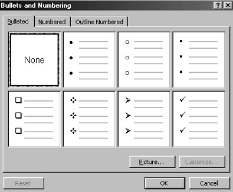
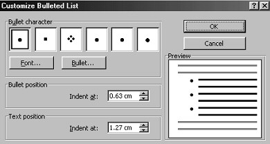
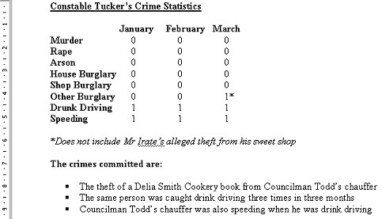

Free
computer Tutorials
|
Free
computer Tutorials
|
|
 home home |
|
||||
Create a Bulleted List in Microsoft WordIf you haven't been working on the Crime Statistics document, click below to download a copy Click here to download the document you'll need for this section. Bulleted lists have been used throughout this site. To create one of your own, do the following.
 As you can see, there are 7 different bullet styles to choose from. Click on any one of them that takes your fancy. When you click on one, the customize button becomes available. You don't need to click this customize button. If you prefer, just click OK to see your bulleted list. But the customize options are worth a look. Click the customize button and take a look at the dialogue box that appears.  As you can see, there are more options to choose from for your bulleted list. You can click on any of the Bullet characters. You can change the colour and size with the Font button. The Bullet button gives you more options for the style of bullet you want. Bullet Position and Bullet text are quite interesting options. The Bullet position lets you specify how far from the left hand side you want your bullets. At the moment, it is set to 0.63 centimetres from the left of the page. The Bullet text is the text that appears after your bullet. At the moment, the text is set to 1.27 centimetres from the left of the page. You can change these values to anything you want. But leave them alone for now, and just click the cancel button on the customize option. You will be taken back to the main bullet dialogue box. Once there, choose a bullet style for your highlighted text, and then click the OK button. Your document will now look something like this:  The bulleted list makes things a lot easier to read. A shortcut to adding bullets can be found on the toolbar. These are the icons: The one on the left is for a numbered list, and the one on the right is the bulleted list. But it will only give you the bullet style you last used. To use them, highlight your text and simply click on one of the icons with your left mouse button.
OK, our report is coming along nicely. We can do more to it, though. The next thing we're going to do is use the font option to change the size and font of the heading. Learn how to change Fonts and Font sizes in Microsoft Word --> |
|||||
|